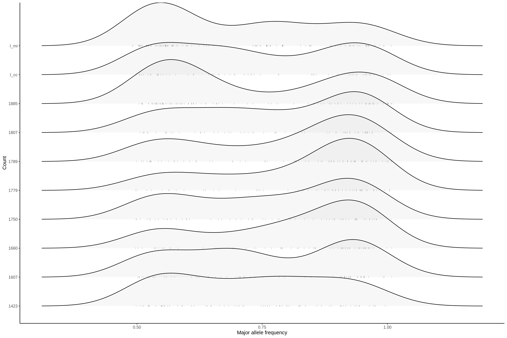

Section 4 Allele frequency
4.1 major allele frequency
4.1.1 all samples and all genomes
without E. Coli
p <- ggplot(dat, aes(x = majorAF, y = mouse.id))
p <- p + ggridges::geom_density_ridges(jittered_points = TRUE,
position = ggridges::position_points_jitter(width = 0.01, height = 0),
point_shape = '|', point_size = 1, point_alpha = 0.5, alpha = 0.1)
p <- p + theme_classic()
p <- p + theme(strip.background = element_blank())
p <- p + xlab("Major allele frequency") + ylab("Count")
p## Picking joint bandwidth of 0.0632
4.1.2 by sample and genome
plotAFofSample <- function(dat = dat) {
p <- ggplot(dat, aes(x = majorAF, y = genome, color = genome))
p <- p + ggridges::geom_density_ridges(jittered_points = TRUE,
position = ggridges::position_points_jitter(width = 0.01, height = 0),
point_shape = '|', point_size = 2, point_alpha = 1, alpha = 0.1)
p <- p + facet_wrap(~desc)
p <- p + theme_classic() + scale_color_manual(values = omm_colors)
#p <- p + facet_grid(phase ~., space = "free", scales= "free")
p <- p + theme(strip.background = element_blank())
p <- p + xlab("Major allele frequency") + ylab("Genome")
return(p)
}
suppressWarnings(plotAFofSample(dat))## Picking joint bandwidth of 0.0565## Picking joint bandwidth of 0.0601## Picking joint bandwidth of 0.0492## Picking joint bandwidth of 0.0549## Picking joint bandwidth of 0.0513## Picking joint bandwidth of 0.0366## Picking joint bandwidth of 0.0626## Picking joint bandwidth of 0.0767## Picking joint bandwidth of 0.0482